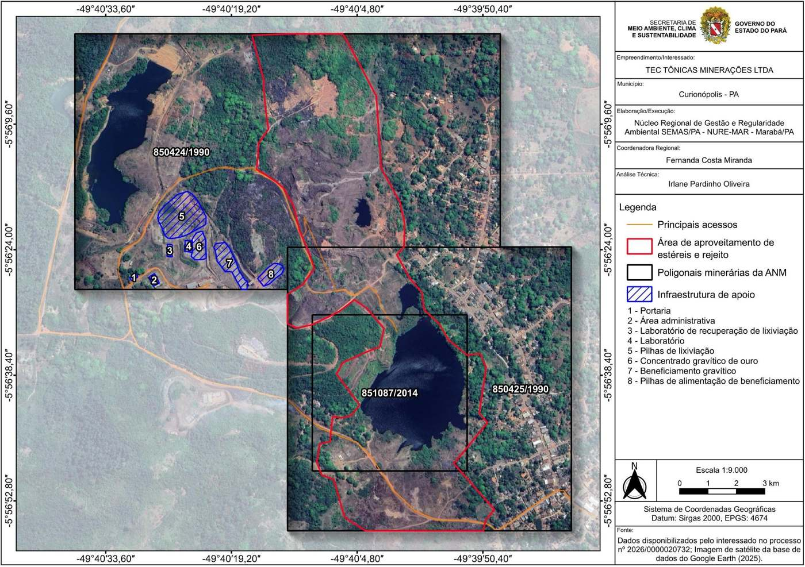

A Tectônicas é a operadora reconhecida do projeto
Os direitos minerários de Serra Pelada pertencem à Coomigasp (cooperativa dos garimpeiros) e à SPCDM. Por contrato de operação integrada, reconhecido em decisão judicial e anotado pela ANM, a Tectônicas é a empresa autorizada a operar o empreendimento nos três títulos, sem alteração da titularidade.
Publicado no Diário Oficial da UniãoTitular: Serra Pelada Companhia de Desenvolvimento Mineral (SPCDM). Operadora anotada: Tectônicas.
Titular: Coomigasp. Operadora anotada: Tectônicas.
Titular: Coomigasp. Operadora anotada: Tectônicas.
Licenciamento concluído
Em 2026 a Tectônicas percorreu as etapas jurídicas, regulatórias e ambientais necessárias para operar. A Licença de Operação foi concedida pela SEMAS/PA após análise técnica do Núcleo Regional de Marabá.

- Contrato
Operação integrada com os titulares
Contrato com a Coomigasp e a SPCDM para a Tectônicas operar o empreendimento, assumindo débitos e bloqueios deixados pelo projeto anterior.
- Decisão judicial
Reconhecimento da operadora
Processo nº 0000149-49.2020.5.08.0130, que fundamenta a anotação na ANM e a licença ambiental.
- 05/05/2026
Anotação na ANM
Relação nº 163/2026, publicada no DOU: a Tectônicas está autorizada a atuar como operadora nos três títulos.
Ver publicação no DOU - 02/06/2026
Pedido de Licença de Operação
Protocolo na SEMAS/PA, processo nº 2026/0000020732, com Plano de Controle Ambiental.
- 15/10/2026
Parecer técnico favorável
Parecer Técnico nº 70133/NURE-MAR/DINURE/2026 e Laudo Técnico nº 20611/2026 atestando a área.
- 16/10/2026
Licença de Operação concedida
LO nº 16496/2026, válida até 15/10/2030, para o aproveitamento mineral de ouro nos três polígonos.
Conferir autenticidade na SEMAS
Um dos maiores garimpos de ouro da história
Nos anos 1980, Serra Pelada foi o maior garimpo a céu aberto do período. A atividade manual deixou grandes volumes de rejeito e estéril na área, material que hoje é o foco do aproveitamento licenciado da Tectônicas, com recuperação ambiental das áreas alteradas.
Fonte: IBRAM, Instituto Brasileiro de Mineração.
- Município
- Curionópolis, Pará
- Região
- Sudeste do Pará, Província Mineral de Carajás
- Coordenadas
- 5°56′25″ S · 49°40′25″ W (SIRGAS 2000)
- Substância
- Ouro
- Tipologia
- Aproveitamento de rejeito e estéreis na área de concessão de lavra
- Licença
- LO SEMAS/PA nº 16496/2026, até 15/10/2030
O empreendimento ocupa a área histórica de Serra Pelada, com acesso viário e infraestrutura de apoio já delimitados na licença. A operação aproveita material já movimentado no passado, o que reduz a necessidade de novas frentes de lavra e combina produção com recuperação da área.
Por que ainda há ouro em Serra Pelada
Serra Pelada não é apenas uma jazida de ouro. A literatura científica a classifica como um depósito de ouro, paládio e platina, de teores excepcionais. Com os métodos manuais dos anos 1980, grande parte desses metais não foi recuperada e permaneceu nos rejeitos e estéreis acumulados na área.
Metais e minerais do depósito
Ouro paladiado, com paládio na própria liga, de alto teor e próximo à superfície.
Presente no ouro e em minerais próprios de paládio.
Minerais de platina associados ao ouro; sondagens publicadas registraram teores elevados em profundidade.
Óxidos de manganês e bário, goethita, hematita, quartzo, caulinita, sericita, monazita e florencita.
O enriquecimento ocorre em brecha rica em goethita ao longo da falha do Cinzento, sobre uma mineralização mais antiga em profundidade (Cabral, Burgess e Lehmann, Economic Geology, 2011).
Por que o garimpo deixou metal no rejeito
- ~25%Recuperação rudimentar
Bateias, calhas e mercúrio recuperam, em média, só cerca de um quarto do ouro presente no material garimpado (NAP Mineração/USP).
- <0,15 mmOuro fino perdido
A calha só retém bem partículas de até 0,25 mm. Abaixo de 0,15 mm as perdas são significativas, e o ouro fino seguia com a lama e a rocha moída para as pilhas.
- Pd · PtMetais do grupo da platina
Separar paládio e platina exige beneficiamento industrial, inexistente no garimpo manual.
- RejeitoRiqueza reconhecida
Já em 2008 geólogos avaliavam que os resíduos do garimpo seguiam como fonte de riqueza. Em 2018, estimativa pública de terceiros indicava 1,3 a 1,5 milhão de toneladas de rejeito com cerca de 0,7 g/t de ouro.
Estrutura autorizada na licença
A Licença de Operação delimita a área de aproveitamento e as estruturas de apoio do empreendimento.
- 1Portaria
- 2Área administrativa
- 3Laboratório de recuperação de lixiviação
- 4Laboratório
- 5Pilhas de lixiviação
- 6Concentrado gravítico de ouro
- 7Beneficiamento gravítico
- 8Pilhas de alimentação do beneficiamento
Programas previstos no licenciamento
Recuperação de áreas
Plano de Recuperação de Áreas Degradadas executado junto com a operação.
Recursos hídricos
Gestão da água, drenagem e controle de erosão e sedimentos.
Estabilidade das pilhas
Monitoramento contínuo das pilhas de estéril e de beneficiamento.
Comunidade local
Capacitação e contratação de mão de obra local, fornecedores da região e comunicação social com Serra Pelada.
Projeto licenciado, pronto para escalar
A Tectônicas busca parceiros e investidores para a fase de operação em Serra Pelada. O material técnico completo está disponível para investidores qualificados, mediante acordo de confidencialidade.
Operadora anotada pela ANM com base em decisão judicial e contrato com os titulares.
Licença de Operação SEMAS/PA válida até outubro de 2030.
Aproveitamento de rejeitos e estéreis históricos de um dos depósitos de ouro mais conhecidos do Brasil.
Laudos, licença, volumes, teores e cronograma de produção sob NDA.